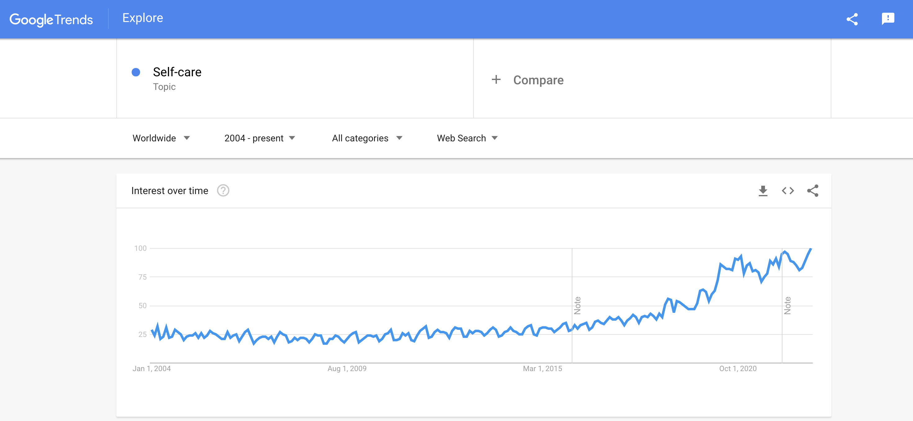

As soon as I started writing, I took a hiatus from contributing to my blog. Short story: I’m going to shelf my original intentions for this blog and shift my focus towards a different problem.
What happened?
My posts got some traction; I was happy that some of the newsletter signups came from people I’ve never met. I was on cloud nine when I had a chance to speak to them (they weren’t bots signing up!). Then I was crushed.
I reached out to the subscribers and asked, “How did you get here? Why did you sign up?” I expected their answers to be something like: “I’m a first time manager and wanted to see how I can be better.”
Instead, what I got was:
- “My manager doesn’t know what they’re doing. I hate waking up in the morning to go to work. I’m so frustrated and I wanted to see if what they’re doing is legit.”
- “I thought I could learn to manage up and make my manager better so they stop micromanaging me.”
- “I’ve never had a good manager and I want to know what a good manager looks like.”
Well, shit. That’s not the target audience I had in mind.
No matter. With the user interviews behind me, I decided to double down and see if there was a way to solve a newfound problem: how do you turn a turd manager into gold?
This led to countless problem statements, questions, and HBR articles. And I didn’t even consider the implications of gender and race! Needless to say, it was quite the mental gymnastics with hours of mind mapping. I’ll narrate my thought process in three parts.
Part 1: Exploration of organizational paradigms
I stopped researching the topic shortly before considering gender and race implications around leadership. This is because I felt that there are practices, irrespective of social inequities, that need paradigm shifts to turn a turd manager into gold. I’ll name just two for brevity.
Promotion into management
The Peter principle posits that people are promoted based on their success in their previous role until they arrive at a role where they are incompetent and are no longer promoted. People peak at their level of incompetence, and, eventually, roles are occupied by employees who are incompetent at their job.
The problem is that to maintain stasis, you need the right amount of incompetence. You can’t be too incompetent. You’ll be fired. But if you’re too competent, that’s not great either. Too efficient at your job because you created Excel macros to automate the work then went off to a yoga class? Let’s hope your manager doesn’t get insecure, goes on a power trip, and enforces presenteeism. Rocking the hierarchy boat happens at either end of competence.
Leadership development
Only 5% of businesses have implemented leadership development at all levels. Ever the optimist, I hope that this number is higher since this research was published in 2015. Even with a whopping 400% increase, that’s only 25% of businesses cultivating leaders within their organizations. I’m optimistic, but I’m not 400%-increase optimistic.
My takeaway is that many people are promoted into a manager role and not equipped to perform well.
So how do we hire the right person in the first place? How do we onboard them? How do we set the right expectations? How do we convey company goals? How do we relate the company mission to the leaders? How do we allocate responsibilities? How do we hold people accountable?
But, more importantly for the organization: “how do all these questions help hit our targets we’ve got now? Or, generously, a year from now?”
(Note: as someone who set out to take a year off from the corporate world to retreat into reflecting, reading, and writing, let me say: a year is wicked short.) And therein lies the good ole’ paradigm that need shifting.
Problems that call for commitment towards effective development require long-term thinking in a short-sighted world. We want immediate gratification. I don’t want Prime later. I want Prime now. And I hit a brick wall. I don’t know how to subdivide and tackle these problems.
Part 2: Who cares?
Under this massive “problem tree” canopy, one more node of notion started propagating. I don’t think enough people care about this problem. Here, I’m defining care in two different ways.
- (noun) Conscientious: Are there serious attention and consideration being applied towards solving this problem? (By the way, throwing money at the problem is not it.)
- (verb) Foster: Is this problem being looked after and tended to its needs?
This led me down a neighboring rabbit hole as I pondered about what it means to practice care and be caring.
For instance, do people generally care much at all in their daily lives? How often do people take time to consider how they might apply their attention towards something or someone they value? And do they frequently look after something and someone they cherish? When was the last time you did something that may not be ideal to do now, but would be good for you much later? If people aren’t even doing that for their loved ones as a part of their ritual, I don’t blame them for not extending care anywhere else.
“But wait!” you may interject as you read this. “Self-care has really taken off recently. We want to make sure we look after ourselves, so we can look after others and be more empathetic.”
Part 3: Bastardization of how people care

It is true. Self-care is a topic that has gathered more interest over time. You can see that from the Google Trends data shown above. Maybe that does mean we’re more willing to exercise self-care (and by extension, practice some of its “sister” activities like self-reflection and self-compassion). In fact, you can find ways to practice self-care in many blog posts these days. I’ll include some below.
- Spa day with exfoliating scrub, face mask, and hair mask!
- Get mani-pedi to feel more put together!!
- Get a haircut!!!
- Take a long, hot shower!!!!
- Watch your favorite movie!!!!
- Do sudoku or a crossword puzzle!!!!!
- A bubble bath with a glass of wine!!!!!!
- Wear cozy sweaters!!!!!!!

I’m not vilifying these activities. It’s good to self-indulge. I put on my face mask and watched clips of the Twilight saga so I could mock the atrocities unfolding on the screen just last night. But self-indulge does not make for self-care.
“Real self-care isn’t massages and green juices; it’s choosing to create a life that you don’t feel the need to regularly check out of.” -From Psychology Today
And so, after the months-long expedition down the rabbit holes, I finally reached my destination (maybe a layover? Because this may just be a connecting flight). I want to figure out how people can truly self-care. Not the flashy Instagram story of someone mashing up avocados and putting kale into a blender with #selfcare. I mean figuring out a way for people to take small moments in their day to intentionally, attentively, and consistently exercise self-care.
With this new goal in mind, I’m also shifting the focus of my blog from its original focus to chronicle my process towards the new problem I plan on chasing. In doing so, I am hoping to kill two birds with one stone by adding one more job: There have been many times in my career when I wanted relatable and practical advice for product management. But so much product management literature is fluff. People don’t benefit from an aimless, self-promotional blurb posted on LinkedIn, Medium, or Twitter. Frameworks are nice to see, but seeing how it can apply in real life helps a heck of a lot more. So maybe my process, warts and all, may prove to be more applicable to some.
At the very least, the blog will prove to be an effective way for future employers to review my candidacy. I’ll be sure to drop these 🚩in the posts so you can just Ctrl-F for it. You’re welcome.
🚩 Too sarcastic. May not take things seriously enough.
If you found my blog helpful, please consider adding to my book fund. You can also make requests on what I should read next!